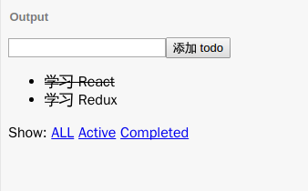
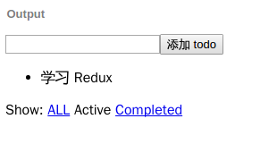

本节使用到的环境：https://jsbin.com/kuhufer/edit?js,output
我们已经实现了我们之前所定义的 todos 的动作对应的所有功能，包括添加 todo 和切换 todo 完成状态。
添加过滤器
在这一节里，我们将实现 SET_VISIBILITY_FILTER 动作对应的功能。
通过修改可视过滤器，我们允许用户选择想要看到的 todo 列表，比如已完成的 todos, 未完成的 todos, 或者是全部 todos.
我打算直接使用 a 标签来表示切换“按钮”。
const FilterLink = ({
filter,
children
}) => {
return (
<a href='#'
onClick={e => {
e.preventDefault();
store.dispatch({
type: 'SET_VISIBILITY_FILTER',
filter
});
}}
>
{children}
</a>
);
};点击这样一个组件将会分发一个 SET_VISIBILITY_FILTER 动作，将可视过滤器切换成传入的 props 的 filter 属性的值所指的过滤器。
我们使用字符串来简单地代表过滤器。
然后我们在 TodoApp 组件中添加这些过滤器选择组件：
class TodoApp extends Component {
render() {
return(
<div>
{/* <input .../> */}
{/* <button ...>...</button> */}
{/* <ul>...</ul> */}
<p>
Show:
{' '}
<FilterLink
filter='SHOW_ALL'
>
ALL
</FilterLink>
{' '}
<FilterLink
filter='SHOW_ACTIVE'
>
Active
</FilterLink>
{' '}
<FilterLink
filter='SHOW_COMPLETED'
>
Completed
</FilterLink>
</p>
</div>
);
}
}我们现在已经可以点击这些组件并且分发动作了，但是不会有任何的过滤效果，因为我们还没有使用过滤器去过滤 todo 列表。
创建一个新的函数用于通过给定过滤器来过滤 todo 列表。它接受两个参数，要过滤的 todo 列表和要使用的过滤器。
const getVisibleTodos = (
todos,
filter
) => {
switch (filter) {
case 'SHOW_ALL':
return todos;
case 'SHOW_COMPLETED':
return todos.filter(
t => t.completed
);
case 'SHOW_ACTIVE':
return todos.filter(
t => !t.completed
);
}
};使用数组的 filter 方法可以写出非常直观简洁的过滤逻辑。
我们使用这个方法来获取当前可见的 todo 列表。
class TodoApp extends Component {
render() {
const {todos, visibilityFilter} = this.props;
const visibleTodos = getVisibleTodos(
todos,
visibilityFilter
)
return(
<div>
{/* <input .../> */}
{/* <button ...>...</button> */}
<ul>
{visibleTodos.map(
/* ... */
)}
</ul>
{/* <p>...</p> */}
</div>
);
}
}
const render = () => {
ReactDOM.render(
<TodoApp {...store.getState()} />, // 用展开运算符把所有 state (todos, visibilityFilter) 传入
document.getElementById('root')
);
};我们通过从 render 方法传入所有 state 把 visibilityFilter 通过 props 传递给 TodoApp.
然后计算出可视的 todo 列表。
最后我们只把可视列表 visibleTodos 渲染出来。

现在，点击过滤器已经可以有过滤可见 todo 的效果了。
但是我们不能知道当前的过滤器是哪一个，我们可以来修复这个问题。
为了让过滤器组件们知道当前的过滤器是哪一个，我们应该把 visibilityFilter 传给每一个 FilterLink 组件。
然后通过在 FilterLink 组件内判断是否过滤器来修改其样式。
我们只要简单地将当前过滤器显示为不可点击的普通的文字就可以很好地区分了。
class TodoApp extends Component {
// ...
<FilterLink
filter='SHOW_COMPLETED'
currentFilter={visibilityFilter}
>
//...
}const FilterLink = ({
filter,
currentFilter,
children
}) => {
if (filter === currentFilter) {
return <span>{children}</span>;
}
return (
//...
);
};
总结
就像之前实现计数器一样，我们应用前面学到的 Redux 知识配合 React 完成了一个完整的 Todo 应用。
让我们回顾一下，一个完整的 Redux 应用应该包括：
- reducer
store
- state
action
通过使用 combineReducers 方法我们将两个独立的状态联合起来组成一个整体状态去管理。
我们可以很方便地添加和删除状态，就像这节里面添加过滤器一样。
接下来几节我们将讨论一些在使用 Redux 中常见的问题和优雅的解决方法。